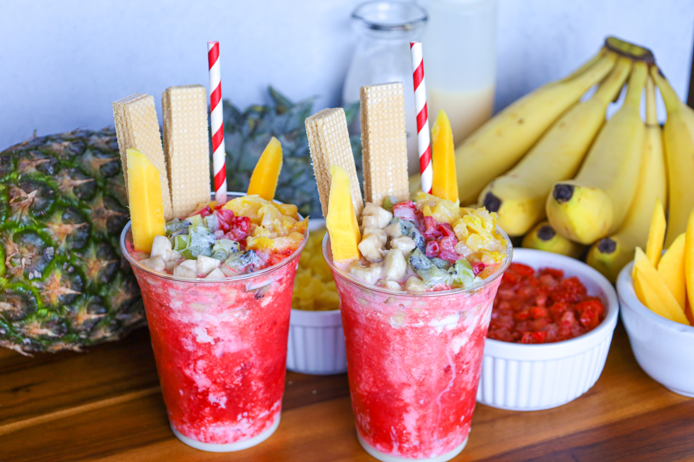

¿Dónde comer?
En Cali encontrarás una gran variedad de restaurantes, mercados y lugares donde disfrutar de la gastronomía típica del Valle del Cauca.
Ver más
En Cali encontrarás una gran variedad de restaurantes, mercados y lugares donde disfrutar de la gastronomía típica del Valle del Cauca.
Ver más
En Cali puedes disfrutar de platos y bebidas tradicionales como el cholado, el pandebono, el aborrajado, cortado, chuleta y otros sabores característicos de la región.
Ver más
Conoce los mercados, galerías y espacios gastronómicos donde puedes disfrutar de la comida y cultura de Cali.
Ver más